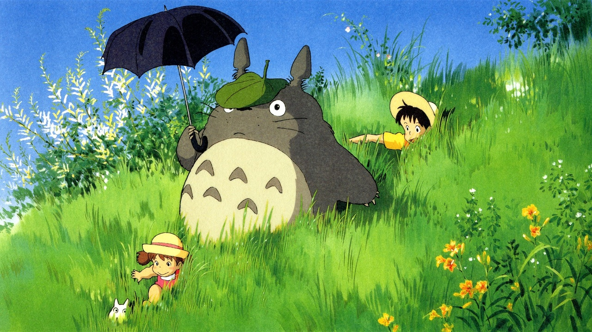
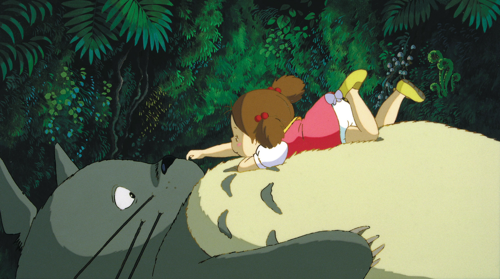
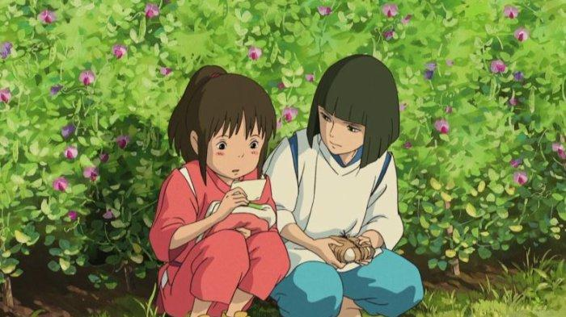
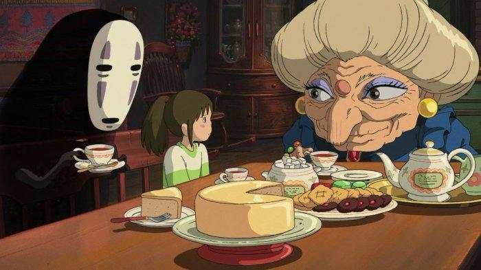
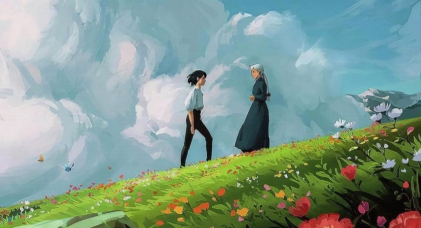
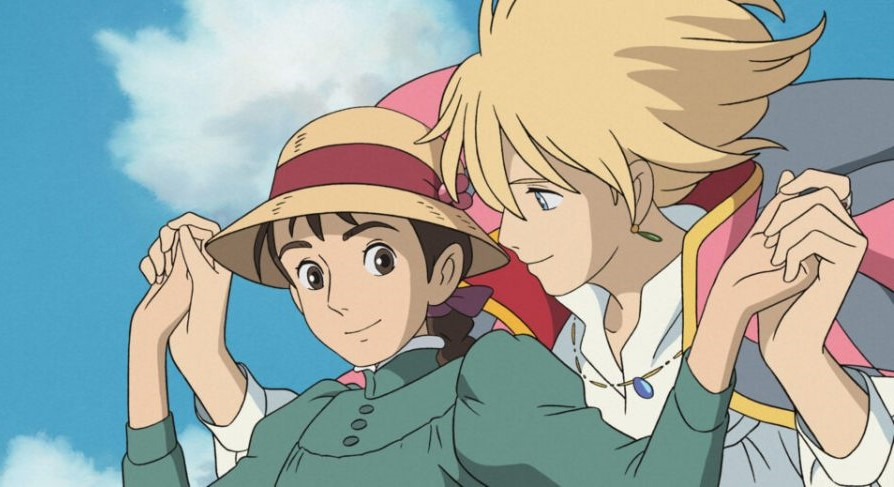
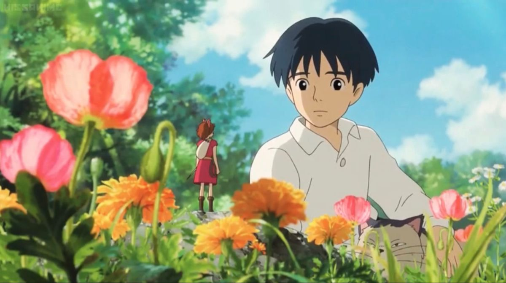
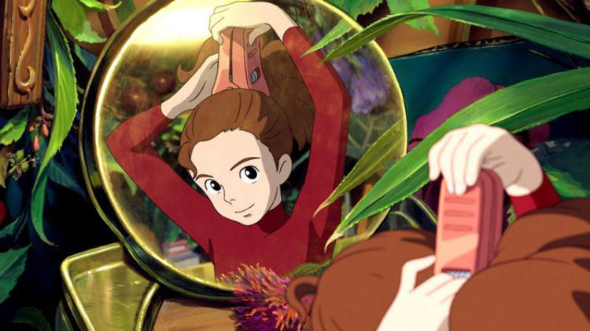
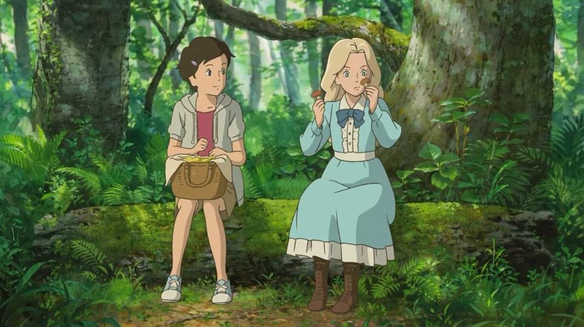
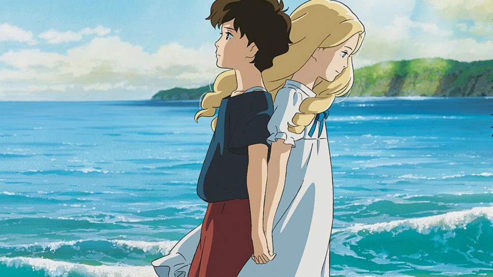

Sejarah Singkat
Studio Ghibli didirikan oleh Hayao Miyazaki, Isao Takahata, dan
Toshio Suzuki pada tahun 1985 di bawah naungan sebuah perusahaan
penerbitan bernama Tokuma Shoten. Studio ini dibentuk setelah
kesuksesan film pertama mereka, Nausicaä of the Valley of the Wind
(1984). Tahun 1997, Studio Ghibli sempat bergabung dengan Tokuma
Shoten, namun akhirnya berdiri menjadi perusahaan independen di
tahun 2005.
Saat ini, Studio Ghibli sudah menjadi keberadaan yang kuat di
industri animasi. Saking terkenalnya karya-karya Studio Ghibli di
dunia global, Studio ini sampai memiliki museum khusus menampilkan
estetika animasi film Studio Ghibli dan juga themed cafe di
berbagai belahan dunia dengan tema "Ghibli".
Animasi Studio Ghibli Terbaik
Ada banyak animasi populer yaang dihasilkan Studio Ghibli. Genre
yang disajikan Studio Ghibli pun beragam, mulai dari action,
fantasy, hingga slice of life. Banyak karya Studio Ghibli yang
meraih penghargaan nasional seperti Animage Grand Prix Award dan
Japan Academy Prize for Animation of The Year, maupun penghargaan
internasional seperti Academy Award for Animated Films dan Golden
Bear.
Mereka berhasil menunjukkan kepolosan dua anak perempuan bermain
dengan makhluk-makhluk misterius dalam My Neighbor Totoro (1988),
serta menunjukkan warna-warni dunia ghaib yang unik tapi
menyeramkan dalam Spirited Away (2001). keindahan cinta yang
terpisah oleh waktu juga terlukis dengan baik dalam Howl's Moving
Castle (2004), dan masih banyak lagi animasi yang sangat menarik
berhasil diciptakan oleh Studio Ghibli.
My Neighbor Totoro 1988


My Neighbor Totoro, adalah sebuah film animasi produksi Hayao
Miyazaki dan dirilis ke teater oleh Toho, Troma Films, dan
Disney, tanggal 16 April 1988.
My Neighbor Totoro menceritakan tentang dua saudara yaitu
Satsuki dan Mei Kusakabe yang baru pindah ke sebuah rumah tua.
Di sana, Mei melihat makhluk lainnya yang lebih besar dan sedang
tertidur pulas. Makhluk tersebut bertubuh besar dan
menggemaskan, Mei menyebutnya Totoro. Karakter bernama Totoro
adalah karangan fiksi dari sutradara Hayao Miyazaki yang berarti
tidak ada di dunia nyata.
Spirited Away 2001


Spirited Away merupakan salah satu karya terbaik yang dihasilkan
oleh Studio Ghibli. Animasi ini berhasil mendapatkan penghargaan
internasional seperti Academy Award for Animated Films dan
Golden Bear pada tahun 2002 dan 2003.
Film anime ini menceritakan tentang Shihiro Ogino yang terjebak
di dunia fantasi bernama Kami. Hal itu membuatnya banyak
menemukan kejadian unik yang tidak terduga.
Howl's Moving Castle 2004


Howl's Moving Castle merupakan salah satu film animasi
terpopuler dari Studio Ghibli dengan berhasil memperoleh rating
8,2 di IMDb
Howl's Moving Castle yang menceritakan tentang tokoh bernama
Sophie Hatter. Ia adalah putri tertua dari tiga bersaudara
pembuat topi untuk orang-orang di Ingary. Sophie dan seluruh
perempuan muda di kota tersebut dilarang keluar rumah. Jika
melanggar, mereka diancam akan dibawa oleh Howl, penyihir jahat
yang memiliki istana berjalan. Akan tetapi, Sophie malah pergi
dari rumah dan melakukan petualangan bersama Howl dan Istananya.
The Secret World of Arriety 2010


The Secret World of Arrietty adalah film animasi Jepang produksi
tahun 2010, bergenre drama fantasi yang dibikin di Studio Ghibli
dan disutradarai oleh Hiromasa Yonebayashi. Film ini diangkat
dari buku The Borrowers karya Mary Norton, seorang penulis buku
anak-anak Inggris. Film garapan Isao Takahata dan Hayao Miyazak
ini behasil memenangkan berbagai penghargaan sejak tahun 2011 -
2012, dan masuk di beberapa animasi hingga tahun 2013.
Arrietty mengisahkan tentang petualangan seorang gadis liliput
yang tergolong sebagai The Borrowers atau peminjam. Sehari-hari,
ayahnya harus pergi ke rumah manusia biasa yang ia tumpangi
untuk meminjam gula, tisu, atau bahan-bahan baku lainnya. Karena
keberadaan mereka telah diketahui oleh manusia, kehidupan
keluarga Clock pun berubah. Mereka harus menghadapi ancaman dari
Haru, asisten di rumah itu. Shou yang tertarik pada Arrietty pun
bersedia membantu kelangsungan hidup bangsa Peminjam itu.
When Marnie was There 2014


Dinominasikan sebagai Best Animated Feature dalam Academy Awards
2016. When Marnie was There ditulis dan disutradarai oleh
Hiromasa Yonebayashi menjadi karya terakhirnya di Studio Ghibli
sebelum ia mengundurkan diri. Film ini juga menjadi film
terakhir bagi Studio Ghibli sebelum hiatus sementara dari dunia
film animasi.
❮
❯
Studio Ghibli dan Kreativitas Industri Animasi
Studio Ghibli jelas mengangkat standar kreativitas industri
animasi pada masa jayanya. Karya-karya mereka menunjukkan bahwa
animasi tidak hanya dinikmati oleh anak-anak, tapi juga dapat
dinikmati remaja dan orang dewasa.Tidak hanya dalam kreativitas,
Studio Ghibli juga menyampaikan beragam pesan dalam setiap
filmnya. Mulai dari petualangan, cinta keluarga, kebebasan,
kebudayaan, sosial dan lingkungan, maupun romansa, semua diulas
oleh karya studio ini.
Studio Ghibli menginspirasi banyak seniman, animator, dan pembuat
film muda. Gaya visual yang khas, cerita dengan makna mendalam,
dan karakter-karakter kompleks menginspirasi banyak kreator yang
tertarik pada animasi konvensional. Semakin era berlanjut, Studio
Ghibli akan tetap menjadi pilar dalam dunia animasi dengan warisan
kreativitas dan inovasi yang terus berkembang.